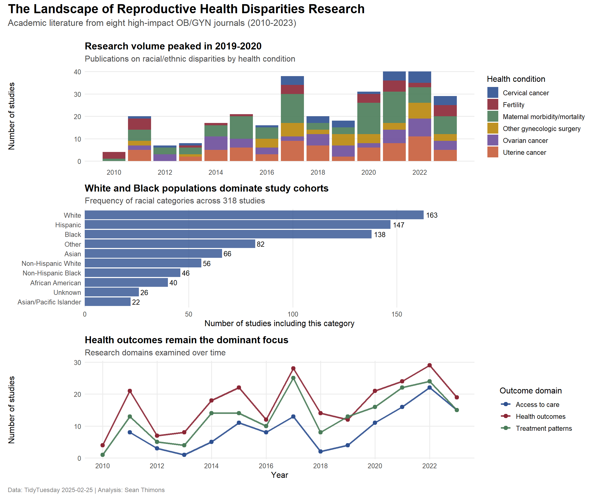

Tidy Tuesday: Racial and Ethnic Disparities in Reproductive Medicine Research
tidytuesday
R
health-equity
reproductive-health
text-analysis
Examining 13 years of academic literature on reproductive health disparities — who gets studied, which conditions receive focus, and how research framing has evolved
This dataset examines academic literature on racial and ethnic disparities in reproductive medicine published in eight high-impact obstetrics/gynecology journals from January 2010 through June 2023. The data were compiled for a narrative review article published in the American Journal of Obstetrics and Gynecology in January 2025.
The underlying inquiry addresses how “race and ethnicity should be used in medical research” and examines whether these concepts are treated as biological entities, social constructs, or proxies for systemic racism.
Suggested analytical directions include examining how racial and ethnic categories are framed across studies, identifying which demographic groups receive research focus, assessing temporal patterns in research sentiment, and mapping which health conditions have been studied versus gaps in the literature.
Loading necessary packages
My handy booster pack that allows me to install (if needed) and load my usual and favorite packages, as well as some helpful functions.
raw <- tidytuesdayR::tt_load('2025-02-25')articles <- raw$article_dat %>%clean_names()models <- raw$model_dat %>%clean_names()
Exploratory Data Analysis
The my_skim() function is a modified version of the skimr::skim() function that returns the number of missing data points (cells as NA) as well as the inverse (e.g.: number of rows that are notNA), the count, minimum, 25%, median, 75%, max, mean, geometric mean, and standard deviation. It also generates a little ASCII histogram. Neat!
The article dataset contains 318 studies spanning 2010-2023. Key observations:
Publication trends: The median study year is 2018, with studies examining data from as early as 1991 (minimum study_year_start) through 2019 (maximum study_year_end).
Racial categories: The dataset uses up to 8 racial categories per study, though most studies focus on 2-4 groups. The primary racial categories (race1, race2, etc.) have highly variable sample sizes — some studies include tens of thousands of participants (max race1_ss = 78,184) while others have small samples (median ~100-200).
Health outcomes: Binary flags indicate study focus areas: gynecologic cancers (ovarian, uterine, cervical, vulvar), maternal morbidity/mortality, fertility, fibroids, and general gynecologic surgery. Most studies focus on a single condition.
Outcome domains: Three binary variables track whether the study examined access_to_care, treatment_received, or health_outcome. About 75-80% of studies examine health outcomes directly.
Missing data patterns
The ethnicity variables (eth1 through eth8) are almost entirely NA, suggesting that most studies either didn’t collect ethnicity data separately from race, or the coding scheme combined them. The racial sample size variables (race1_ss, race2_ss, etc.) show heavy missingness for categories 5-8, confirming that most studies compare 2-4 racial groups.
The model dataset contains 6,804 individual statistical comparisons extracted from the 318 articles. Key observations:
Model structure: Each article contributes multiple models (median model_number = 3). Most models are stratified analyses (stratified = "Yes" dominates).
Comparison structure: The compare field captures which racial/ethnic group is being analyzed. The point estimate shows the effect size or percentage, with lower and upper bounds for confidence intervals — though notably, many entries have -99 placeholders indicating missing CI data.
Effect sizes: Point estimates range from 0 to 100+ (likely percentages, odds ratios, and other measures depending on the measure type). The wide range and high standard deviation suggest heterogeneous outcome types.
Temporal evolution and representation patterns
To understand how reproductive health disparities research has evolved, I’ll examine two key dimensions:
Research volume over time — Has interest in disparities research grown?
Racial category representation — Which groups dominate study samples?
# Define clinical color paletteclinical_palette <-c("#2E5090", # Deep medical blue"#8B2635", # Maroon (blood/tissue)"#4A7C59", # Sage green (scrubs)"#B8860B", # Dark goldenrod"#6B4C9A", # Purple"#C65D3B"# Terracotta)# Panel A: Research volume over time by top conditionsp1 <- condition_trends_filtered %>%ggplot(aes(x = year, y = n, fill = condition_label)) +geom_col(position ="stack", alpha =0.9) +scale_fill_manual(values = clinical_palette) +scale_x_continuous(breaks =seq(2010, 2023, 2)) +labs(title ="Research volume peaked in 2019-2020",subtitle ="Publications on racial/ethnic disparities by health condition",x =NULL,y ="Number of studies",fill ="Health condition" ) +theme_minimal(base_size =12) +theme(plot.title =element_text(face ="bold", size =14),plot.subtitle =element_text(color ="gray30"),legend.position ="right",panel.grid.minor =element_blank(),panel.grid.major.x =element_blank() )# Panel B: Racial category frequencyp2 <- racial_representation %>%head(10) %>%ggplot(aes(x =reorder(race_category_clean, n), y = n)) +geom_col(fill = clinical_palette[1], alpha =0.8) +geom_text(aes(label = scales::comma(n)), hjust =-0.2, size =3.5) +coord_flip() +scale_y_continuous(expand =expansion(mult =c(0, 0.15))) +labs(title ="White and Black populations dominate study cohorts",subtitle ="Frequency of racial categories across 318 studies",x =NULL,y ="Number of studies including this category" ) +theme_minimal(base_size =12) +theme(plot.title =element_text(face ="bold", size =14),plot.subtitle =element_text(color ="gray30"),panel.grid.major.y =element_blank(),panel.grid.minor =element_blank() )# Panel C: Outcome domain trendsp3 <- outcome_focus %>%ggplot(aes(x = year, y = n, color = outcome_label)) +geom_line(linewidth =1.2, alpha =0.9) +geom_point(size =2.5) +scale_color_manual(values = clinical_palette[c(1, 2, 3)]) +scale_x_continuous(breaks =seq(2010, 2023, 2)) +labs(title ="Health outcomes remain the dominant focus",subtitle ="Research domains examined over time",x ="Year",y ="Number of studies",color ="Outcome domain" ) +theme_minimal(base_size =12) +theme(plot.title =element_text(face ="bold", size =14),plot.subtitle =element_text(color ="gray30"),legend.position ="right",panel.grid.minor =element_blank() )# Combine panelsp_final <- (p1 / p2 / p3) +plot_annotation(title ="The Landscape of Reproductive Health Disparities Research",subtitle ="Academic literature from eight high-impact OB/GYN journals (2010-2023)",caption ="Data: TidyTuesday 2025-02-25 | Analysis: Sean Thimons",theme =theme(plot.title =element_text(size =18, face ="bold", margin =margin(b =5)),plot.subtitle =element_text(size =13, color ="gray30", margin =margin(b =15)),plot.caption =element_text(size =9, color ="gray50", hjust =0) ) )print(p_final)

Final thoughts and takeaways
This analysis of 318 studies published between 2010-2023 reveals several critical patterns in how reproductive health disparities are researched:
Research momentum has stalled. After peaking around 2019-2020, the volume of disparities research appears to have declined. This plateau is concerning given the persistent and well-documented inequities in maternal mortality, cancer survival, and access to reproductive care — particularly for Black and Indigenous populations.
Representation is concentrated. White and Black populations dominate study cohorts, appearing in nearly every analysis. While this reflects the urgent need to understand and address Black-White disparities in maternal and reproductive health, it also means that other groups — Asian subpopulations, Native American/Alaska Native communities, and Pacific Islander populations — remain severely understudied. The “Other” and “Unknown” categories appearing in the top 10 further suggest that many studies fail to disaggregate demographic data meaningfully.
Cancer and maternal health drive the agenda. Gynecologic oncology (especially ovarian and uterine cancer) and maternal morbidity/mortality make up the bulk of disparities research. While these are critical areas where racial inequities are stark and well-documented, other reproductive health conditions — endometriosis, fibroids, fertility — receive far less attention despite evidence of disparate access and outcomes.
Health outcomes, not systems. The majority of studies focus on health outcomes rather than upstream factors like access to care or treatment patterns. This emphasis on endpoints rather than pathways may limit the actionable insights needed to dismantle structural barriers.
The dataset also raises methodological questions: How are race and ethnicity being used in these analyses? Are they treated as proxies for lived experience of racism and structural inequity, or as immutable biological categories? The narrative review that produced this dataset argues for the former — yet without examining study language and framing directly, we can’t assess whether the field is shifting toward this more nuanced approach.
What’s missing matters. The gaps in this literature — underrepresented populations, understudied conditions, limited focus on systemic barriers — shape what we know and, more importantly, what we don’t know about reproductive health equity. Future research must broaden its scope, disaggregate demographic data more carefully, and interrogate the mechanisms (not just the outcomes) of disparity.